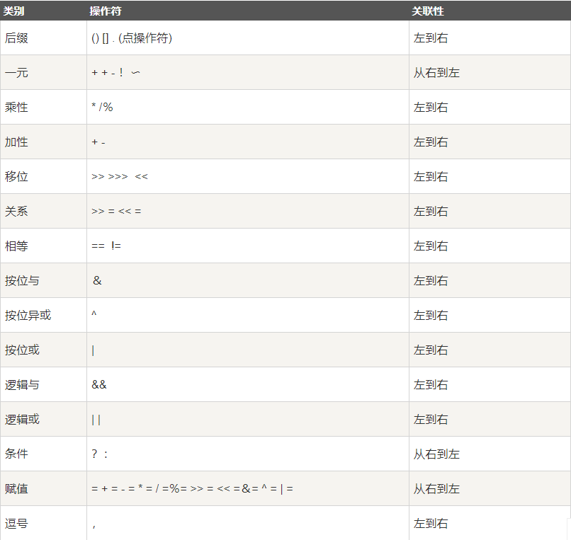
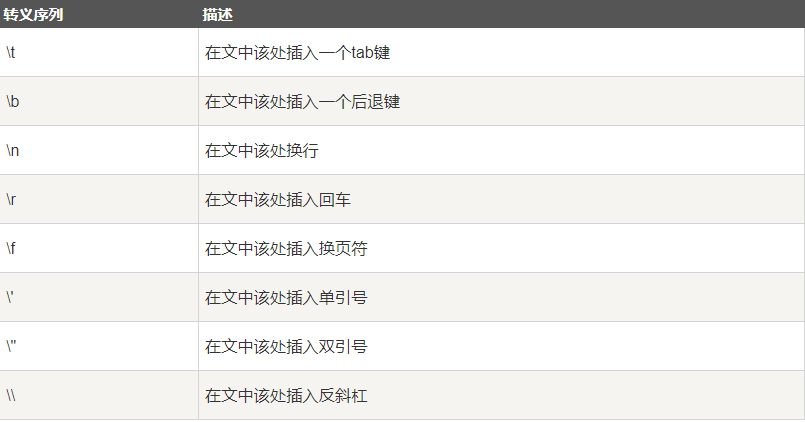

原文出处:本文由博客园博主落成提供。
原文连接:https://www.cnblogs.com/bobozz/p/11462742.html
原文连接:https://www.cnblogs.com/bobozz/p/11462742.html
1.Java运算符优先级


2.内置数据类型的包装类
-
抽象类Number是所有包装类（Integer、Long、Byte、Double、Float、Short）的父类。
-
当数据类型要作为对象使用时，编译器会把内置类型装箱为包装类。
-
当对象要作为数据类型使用时，编译器会把包装类拆箱为内置类型。
public class Test{ public static void main(String args[]){ Integer x = 5; x = x + 10; System.out.println(x); } }
3.Math类
-
Math的方法都被定义为static形式，所以主函数可以直接调用Math类。
4.非访问修饰符
-
static：用来修饰类方法和类变量。
-
final：用来修饰类、方法和变量，final 修饰的类不能够被继承，修饰的方法不能被继承类重新定义，修饰的变量为常量，是不可修改的。
-
abstract：用来创建抽象类和抽象方法。
-
synchronized、volatile：主要用于线程的编程。
5.Number & Math 类常用方法
-
xxxValue()：用于将 Number 对象转换为 xxx 数据类型的值并返回。
public class Test{
public static void main(String args[]){
Integer x = 5; // 返回 byte 原生数据类型
System.out.println( x.byteValue() ); // 返回 double 原生数据类型
System.out.println(x.doubleValue()); // 返回 long 原生数据类型
System.out.println( x.longValue() );
}
}-
compareTo()：用于将 Number 对象与方法的参数进行比较（两个不同类型的数据不能用此方法来比较）。-
返回值：
-
如果指定的数与参数相等返回0。
-
如果指定的数小于参数返回 -1。
-
如果指定的数大于参数返回 1。
-
-
实例：
public class Test{
public static void main(String args[]){
Integer x = 5;
System.out.println(x.compareTo(3));//运行结果为1
System.out.println(x.compareTo(5));//运行结果为0
System.out.println(x.compareTo(8));//运行结果为-1
}
}
-
-
equals()：用于判断 Number 对象与方法的参数是否相等。Integer x = 5; Integer y = 10; System.out.println(x.equals(y));//返回false -
valueOf()：用于返回给定参数的原生 Number 对象值，参数可以是原生数据类型, String等。public class Test{ public static void main(String args[]){ Integer x =Integer.valueOf(9); Double c = Double.valueOf(5); Float a = Float.valueOf("80"); Integer b = Integer.valueOf("444",16); // 使用 16 进制 System.out.println(x); System.out.println(c); System.out.println(a); System.out.println(b); } } -
toString()：用于将 Number 对象值以一个字符串返回。public class Test{ public static void main(String args[]){ Integer x = 5; System.out.println(x.toString()); System.out.println(Integer.toString(12)); } } -
random()：用于返回一个随机数，随机数范围为 0.0 =< Math.random < 1.0。 -
round()：四舍五入。（Math.round(11.5) 的结果为12，Math.round(-11.5) 的结果为-11）
剩下的方法可以在API文档查看。
6.转义序列
